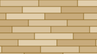
Plankklassiek
Planken evenredig naast elkaar. Een warme sfeer, net een echte houten vloer.
Woninginrichting in ’s-Hertogenbosch, sinds 1990
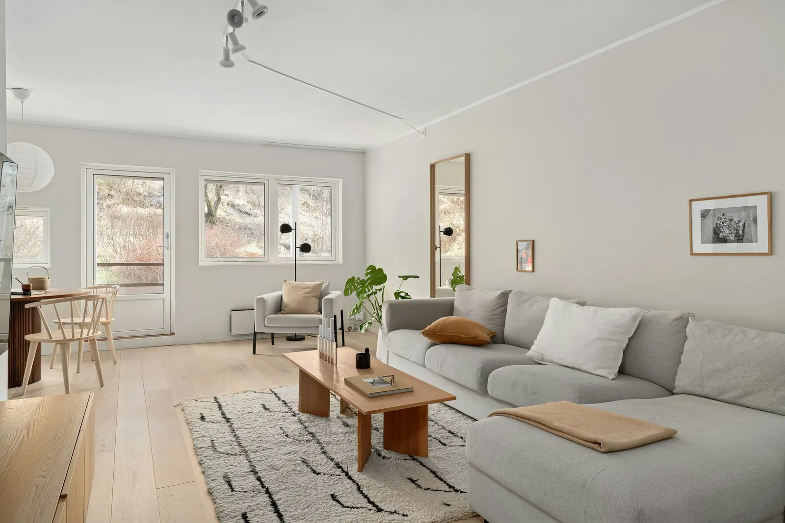
PVC, laminaat, tapijt, hout, vinyl en marmoleum. Gelegd door onze eigen specialisten.
Van betaalbaar laminaat of tapijt tot luxe houten vloeren: er is altijd een vloer die binnen uw budget past.
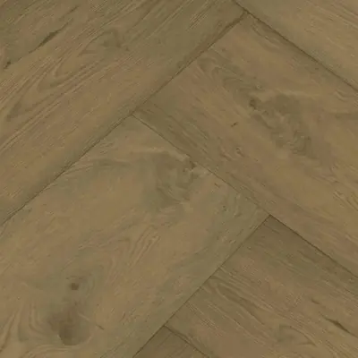
01Onderhoudsvriendelijk en ijzersterk, ook op vloerverwarming.
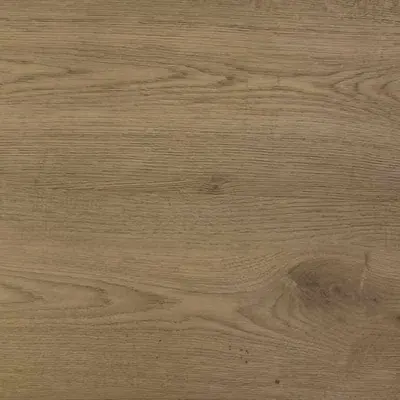
02Een natuurproduct vol charme, past bij vrijwel elk interieur.
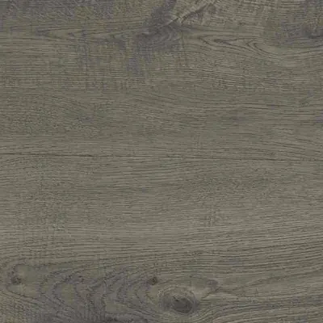
03Een betaalbare vloer als u binnen budget wilt blijven.
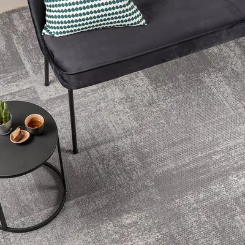
04Warm onder de voeten, in de kamer en op de trap.
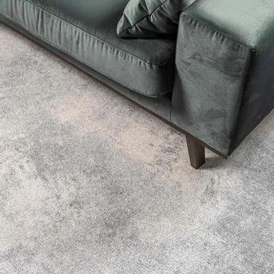
05Ook voor een vinylvloer kunt u bij ons terecht.
Ook voor marmoleum kunt u bij ons terecht.
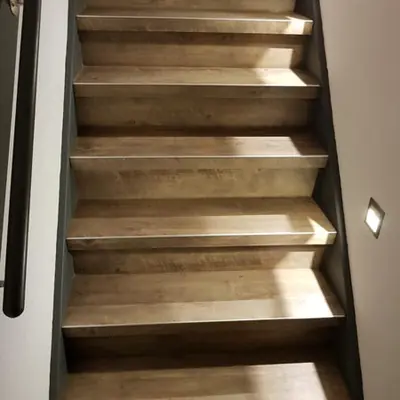
07Uw trap gestoffeerd of vernieuwd, passend bij de vloer.
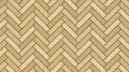
08Plank, tegel, visgraat, Hongaarse of Weense punt.
Waar vroeger de keuze viel op een houten vloer, kiezen steeds meer mensen voor PVC. Door de kwaliteit van de toplaag is hij bijna niet van hout te onderscheiden en beschadigt hij minder snel.
PVC is een populaire oplossing voor elk budget, en geeft een karakteristieke uitstraling aan uw woning, kantoor of bedrijfspand.
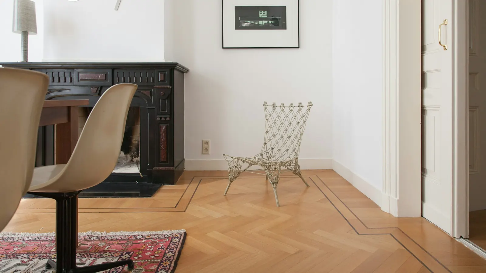
Leggen vraagt precisie en tijd. Daarom raden we aan het aan een specialist over te laten. Zelf aan de slag? Dat kan ook.
Welke soort bij uw huis past, hangt af van uw ondervloer. Onze specialisten adviseren u hier graag over.
Laat eerst de ondergrond egaliseren en leg de vloer daarna in een lijmlaag. Wals de vloer na het leggen, zodat luchtbelletjes verdwijnen en de lijm goed hecht.
Geen enkel probleem. Onze specialisten leggen uw PVC vloer vanaf € 59,95 per m² en een visgraatvloer vanaf € 79,95 per m².
PVC kan goed tegen vocht. Daarom kan ook uw badkamer of keuken een PVC vloer krijgen.
Een visgraatvloer werd vroeger alleen in hout gelegd. Met PVC kan het nu ook: rustig, klassiek en toch modern.

Planken evenredig naast elkaar. Een warme sfeer, net een echte houten vloer.
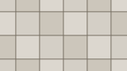
PVC in tegelvorm, bijvoorbeeld voor uw keuken of badkamer.
Planken loodrecht op elkaar in een hoek van 45 graden. Het trapsgewijze patroon van de oude herenhuizen.
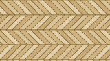
De planken sluiten met een punt op elkaar aan. Strakkere lijnen, meer rust in de vloer.
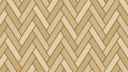
Gelegd zoals visgraat, maar in een hoek van 60 graden in plaats van 45.
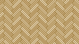
Een twist op de klassieker: de planken liggen per twee in plaats van per stuk.
Een visgraatvloer leggen is geen eenvoudige klus. Ons team informeert u over de mogelijkheden en legt de vloer bij u thuis, vanaf € 79,95 per m².
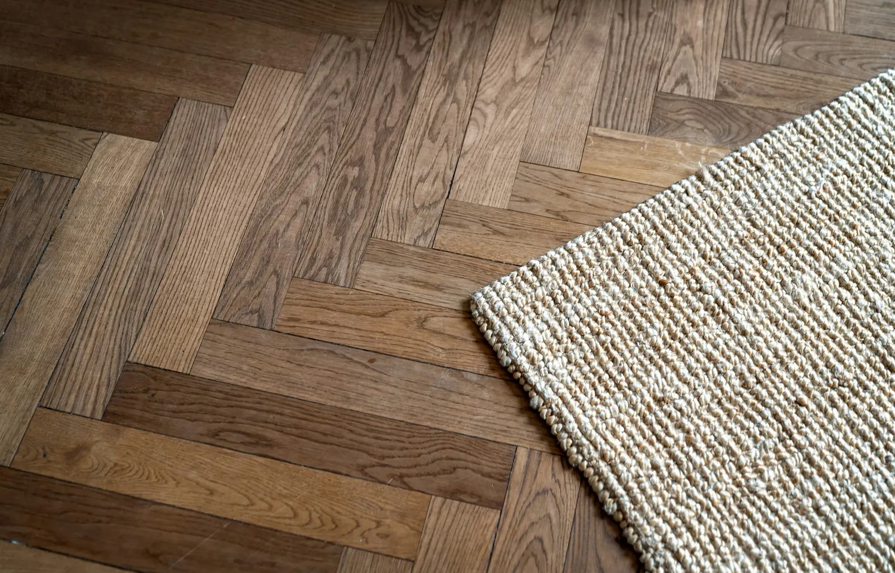

Een uitgebreide collectie PVC, met een eigen lijn die Gelasta rechtstreeks uit Azië importeert. Er is altijd een vloer die past bij uw wensen.

Voor wie meer zoekt dan alleen een vloer. PVC die waarde toevoegt aan uw woning en past bij uw persoonlijkheid en levensstijl.

Een groot merk in de vloerenindustrie, met PVC uit Oostenrijk. Door de functionele opbouw en het unieke kliksysteem zeer eenvoudig te leggen.

Een producent die blijft doorontwikkelen. De vloeren zijn uitermate geschikt voor vloerverwarming en vloerkoeling.
Van Dinther heeft bij ons een mooi plafond en een PVC-vloer gerealiseerd. Alles is netjes uitgevoerd en de ruimtes werden schoon en verzorgd achtergelaten.
Een PVC vloer heeft u vanaf € 34,95 per m² als u hem zelf legt. Laat u hem door onze specialisten leggen, dan betaalt u vanaf € 59,95 per m². Een visgraat PVC vloer leggen wij vanaf € 79,95 per m².
Ja. PVC geleidt warmte goed en werkt perfect in combinatie met vloerverwarming. De vloeren van Bodiax zijn bovendien geschikt voor vloerkoeling.
Ja. PVC is vochtbestendig doordat het grotendeels van kunststof is gemaakt. Daarom kan ook uw badkamer of keuken een PVC vloer krijgen.
Dat hangt af van uw ondervloer. Onze specialisten bekijken de situatie en adviseren u welke soort het beste past.
Maak een afspraak in de showroom aan De Vutter, of laat ons vrijblijvend bij u thuis inmeten.
Uitsluitend op afspraak. De Vutter 23a, 5221 BD ’s-Hertogenbosch.